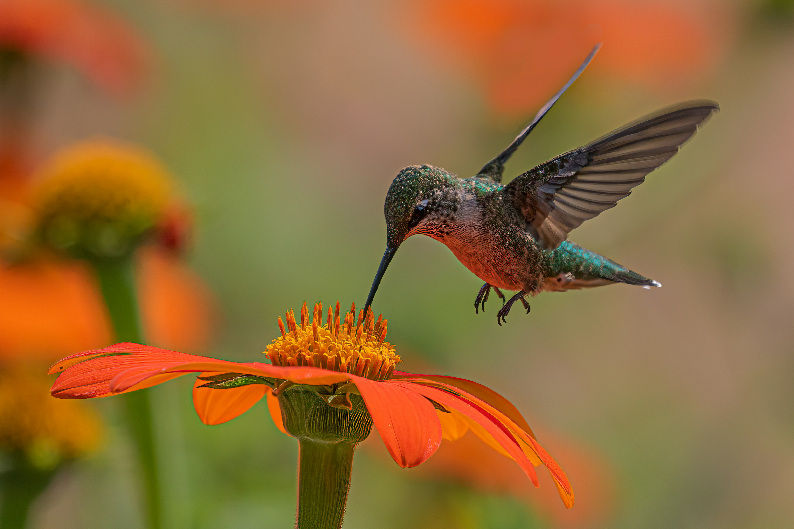
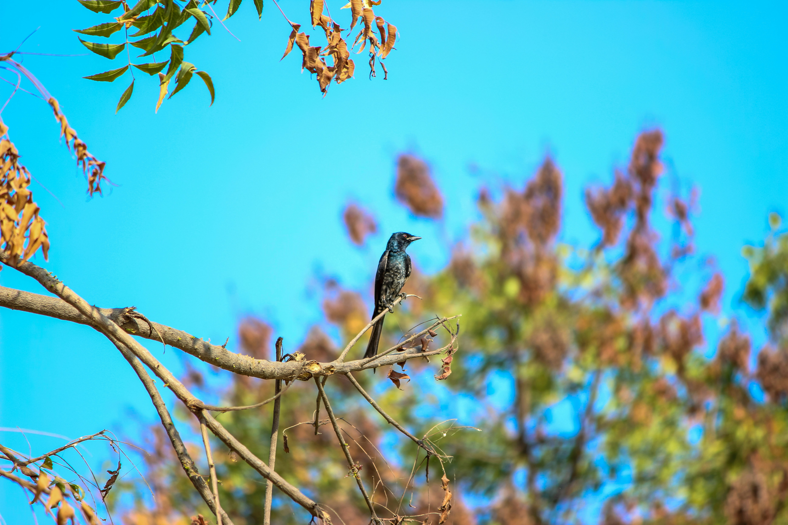
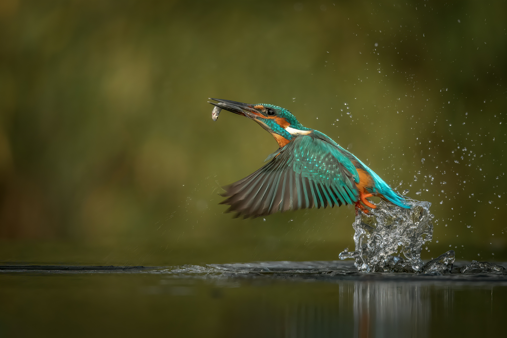

The Amazing World of Birds
Welcome to my little backyard aviary, where field notes meet everyday avian discoveries. Sharing my true calling with the birdies through birding and bird watching.
Discover the beauty of birds in your own backyard. Join me as I share my experiences and observations of our feathered friends.
Open Birding AppSome Birding Hacks
- Become a tree ninja: Move slowly and avoid sudden arm-flailing unless you want the birds to judge your dance moves.
- Spy gear on budget: Binoculars are great, but even a decent camera zoom lens turns you into an undercover bird paparazzi.
- Learn the soundtrack: Memorize common chirps so you can spot a sneaky singer hiding in the leaves before you even see them.
- Bribe them wisely: A simple feeder with water or seeds makes your backyard the hottest VIP lounge in the neighbourhood.
- Scribble squad: Note down who you saw or draw a little sketch to keep track of your feathered visitors.
Field Trip: Morning at Mooncanal, Prayagraj
There is something magical about an early morning walk near the waters of Mooncanal. I recently joined a local group of nature enthusiasts there, armed with a thermos of tea and heavy-duty curiosity.

Our little birdwatching group getting ready!

Walking along the Mooncanal trails.

A pheasant-tailed Jacana spotted near the water lillies.

A magestic Sarus Crane in the distance.
Our walk started out with a simple interactive session where we had to name some of the bird species we already knew of but all of us had very similaer answers and at the end of the walk we all were full of curiosity and enthusiasm about such beautifull birds and serene view of white water lilies around the canal, with this we ended our trip with the bestest memory.

A cute little Ashy Prinia perched on a wire.

An Asian Openbill modeling for us humans.

A bright White Throated Kingfisher.

Fresh water lilies blooming along the Mooncanal.
The Amazing Variety of Birds
Check out some of the amazing birds I've encountered in my backyard aviary.





Featured Bird Spotlight
Black Drongo
Quick Fact
Known for its fearless behaviour and ability to mimic the calls of other birds!
Keep Looking Up!
Keep exploring everyday as you may spot a new little visitor. Thanks for visiting my backyard aviary!